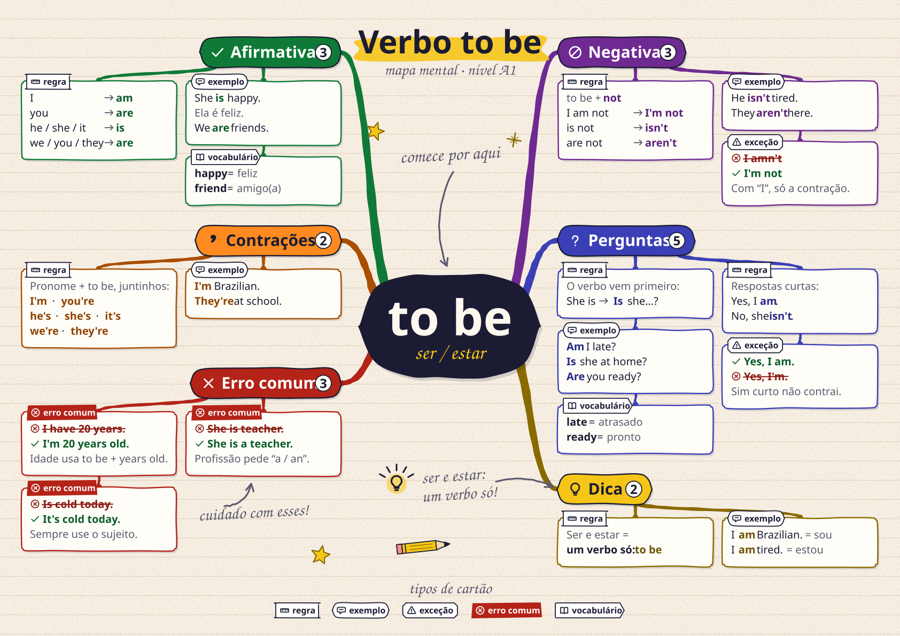
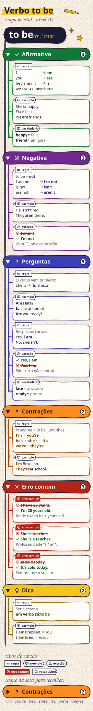
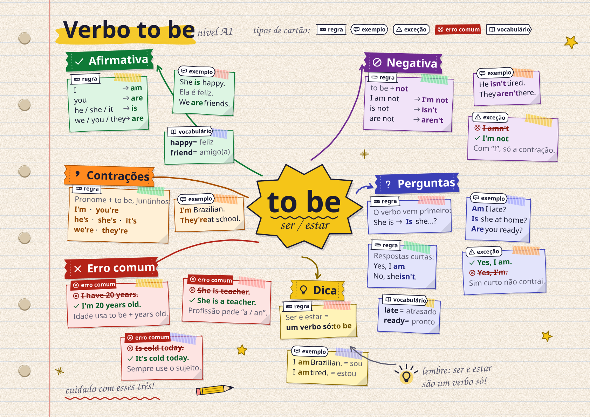

A · Radial mapa clássico
Pontos fortes
- Visão geral num relance: o aluno vê o tema inteiro de uma vez.
- Melhor para impressão A4 deitado; ~25 nós numa folha.
- Ramos coloridos + ícone no título funcionam bem em P&B.
Pontos fracos
- Celular (390 px): fraco. Reduzido a 23%, o texto de 20 px vira ~4,6 px. Exige zoom e arrastar.
- Geração automática: média. Precisa de um algoritmo de colunas/alturas; cresce mal além de 6 ramos.
- Não dá para recolher ramos nem selecionar/ler com leitor de tela se for só imagem.



B · Árvore vertical, recolhível
Pontos fortes
- Celular: ótimo. Texto de 16 px sem zoom, uma coluna, ramos recolhíveis (▸ / ▾) com alvo de toque de 48 px.
-
Geração automática: fácil. É uma lista aninhada: dá para renderizar
em HTML/React nativo (texto selecionável, leitor de tela,
aria-expanded, modo escuro, áudio por cartão) sem SVG. - Cresce bem: mais um ramo é só mais uma linha.
Pontos fracos
- Perde a visão espacial "de mapa": parece uma lista bonita.
- Impressão P&B: ~3 páginas A4 em retrato (2 colunas resolvem na versão para imprimir).
- Menos "uau" que os outros dois à primeira vista.
Minha recomendação: seguir o B no app, com o visual de
cartões e fitas do C, e gerar o A como versão para
imprimir. Detalhes em GRAMATICA-VISUAL.md.



C · Caderno post-its e fitas
Pontos fortes
- Mais memorável e "feito à mão": combina com o Tuca e com o tom amigável do app.
- O fundo pastel de cada cartão reforça o ramo sem depender só do contorno.
- Ótimo para compartilhar como imagem.
Pontos fracos
- Celular (390 px): fraco, como o A, e as inclinações pioram a leitura em tamanho pequeno.
- Geração automática: difícil. Posições e giros foram feitos à mão; automatizar pede grade + "ruído" com semente fixa, e há risco de sobreposição.
- Em P&B os pastéis viram cinza quase igual; quem separa os ramos são ícone e rótulo.
- Mais ornamento: precisa de limite de doodles para não competir com o conteúdo.


| Critério | A · Radial | B · Árvore | C · Caderno |
|---|---|---|---|
| Legibilidade no celular (390 px) | Fraca (precisa de zoom) | Ótima (16 px reais) | Fraca (precisa de zoom) |
| Impressão em P&B | Ótima (1 folha A4 deitada) | Média (≈ 3 páginas retrato) | Média (pastéis somem; ícones salvam) |
| Densidade (≈ 25 nós) | Alta, cabe numa folha | Média por tela, rolagem longa | Média/alta, com mais "ar" |
| Facilidade de gerar dos dados | Média | Fácil (HTML nativo) | Difícil |
| Acessibilidade (texto real, teclado) | Só com HTML por cima do SVG | Nativa | Só com HTML por cima do SVG |
| Personalidade | Boa | Média | Ótima |